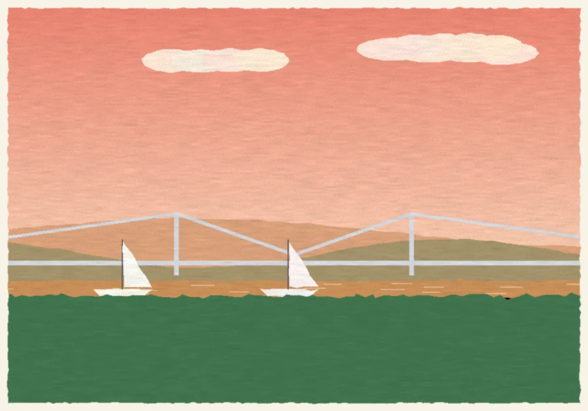

Four guides · one Bay
Flyer Quest
A stack of flyers, a free afternoon, and the whole Bay in front of you. Choose your path.
Or jump straight in
Every guide works the same way: pick a walk, follow the boards and friendly shops, and mark it done so the team can see what's covered.
A volunteer guide for sharing free breathing and meditation sessions. Not an official Art of Living page. Places, hours and posting rules were checked in November 2026. Shops change, so a quick look before you head out never hurts.